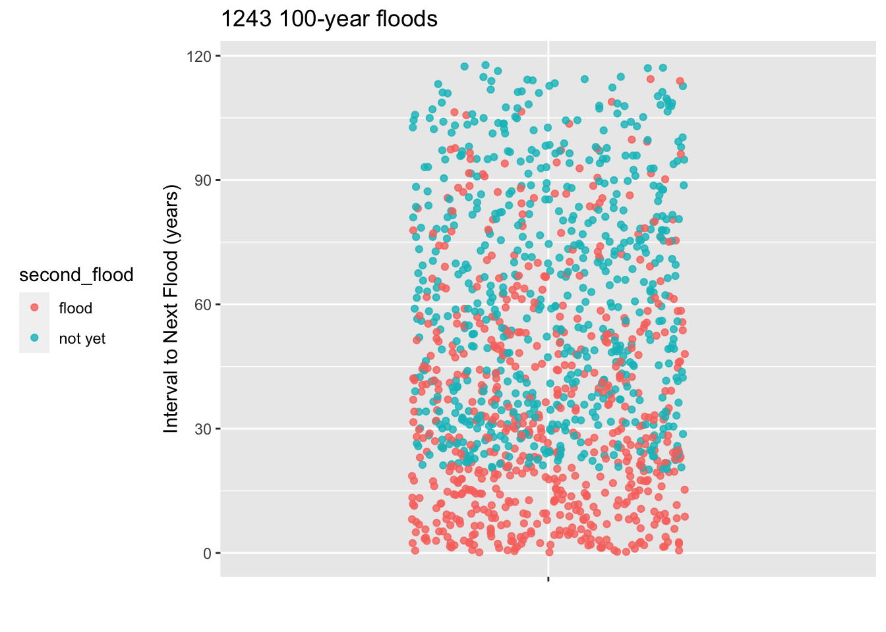
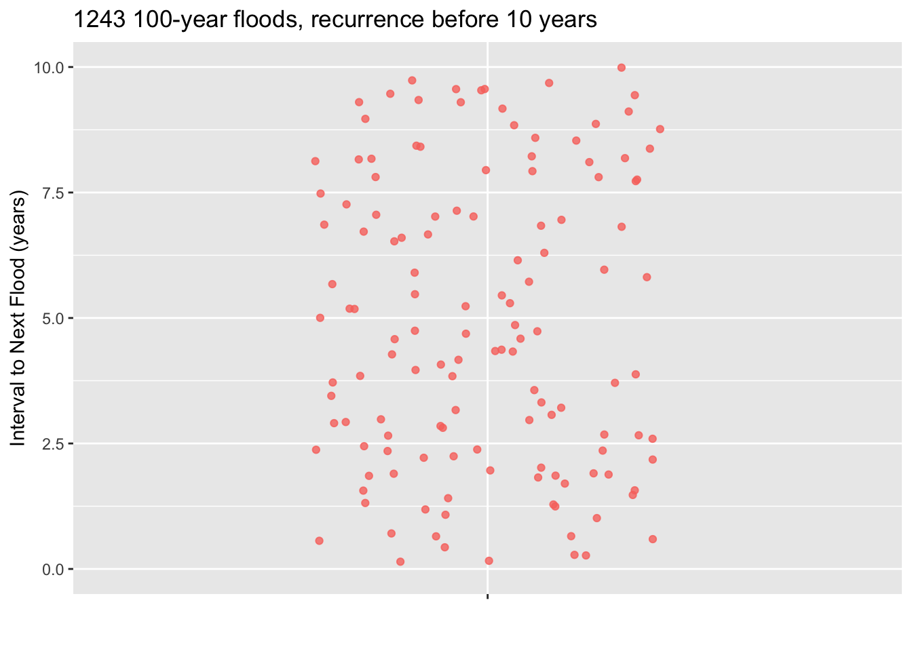
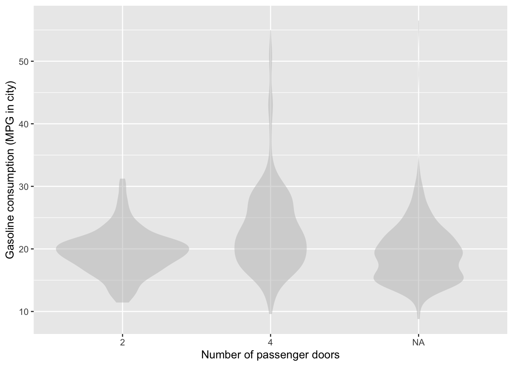
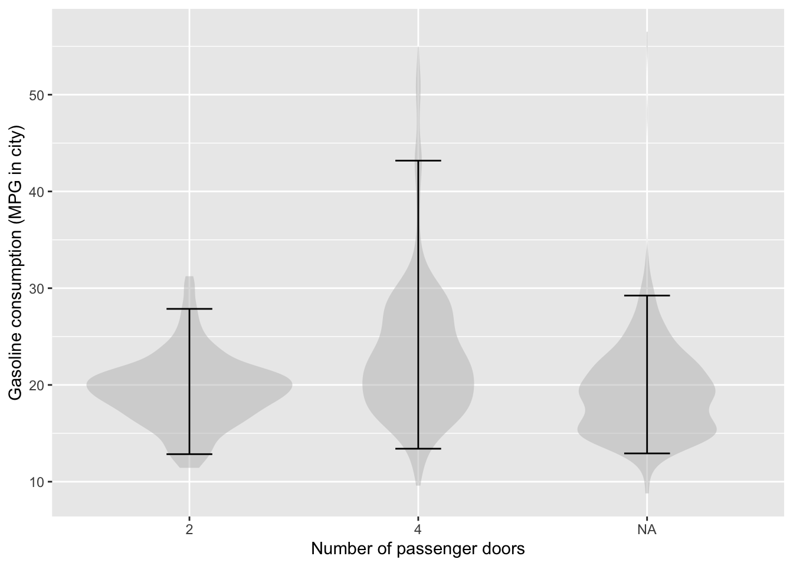
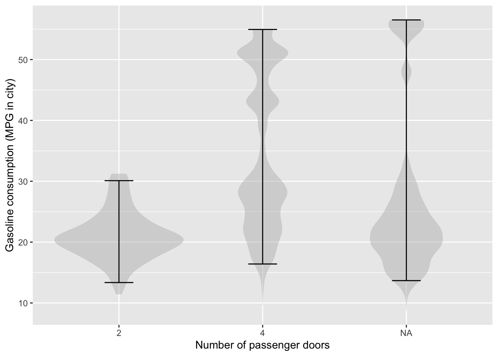

mod <- lm(bac ~ beers, data = openintro::bac)Learning Checks Lesson 26
Ideas
- Construct prediction interval when evaluating a model function.
- Plot a prediction band.
- Check the consistency of the prediction band with the DAG mechanism for large \(n\).
- Is the width right?
- Is the slope right?
- For small \(n\) (say, \(n=5\)), how is the prediction band different than for large \(n\)?
26.1
The openintro::bac data frame records an experiment with sixteen student volunteers at Ohio State University who each drank a randomly assigned number of cans of beer (beers). These students were evenly divided between men and women, and they differed in weight and drinking habits. Thirty minutes later, a police officer measured their blood alcohol content (bac) in grams of alcohol per deciliter of blood.
Construct a model of bac ~ beers using the openintro::bac data.
- Federal and state laws typically specify a legal upper limit for blood alcohol content of a driver of 0.08%. According to the model function, how many beers corresponds to this upper limit?
Solution
One way to calculate this is to guess at the number of beers, then modify your guess according to whether it’s high or low.
mod_eval(mod, beers=4) # too low beers model_output
1 4 0.05915444mod_eval(mod, beers=6) # too high beers model_output
1 6 0.09508197# next guess should be around 5Another way, for the avid calculus student, is to turn the model into a function, then use Zeros() to find where the output is 0.08.
f <- makeFun(mod)
mosaicCalc::Zeros(f(beers) - 0.08 ~ beers, mosaicCalc::bounds(beers=0:10))# A tibble: 1 × 2
beers .output.
<dbl> <dbl>
1 5.16 0Simplest of all, just graph the model function and read backwards from the vertical axis.
- It’s hard to believe that the volunteers in a beer-drinking study who are willing to risk being randomly assigned to drink five or more beers will be representative of a broader group of people. So, we’ll just consider the results to apply to “volunteers.”
At the number of beers you found in (1), what fraction of volunteers will be above the 0.08 level?
Solution
It’s a good assumption that about half the time the actual value for an individual person will be above the model output. This means that five beers should not be taken as an appropriate guideline—half of the people who follow that guideline will be above the legal limit.
- A proper guideline should take into account that the goal is to entirely avoid people who follow it being at or above the 0.08 level. To accomplish this absolutely means finding a number of beers with the 100% prediction interval is entirely below 0.08. Unfortunately a prediction interval at a 100% level stretches to infinity, so eliminating any cases having a BAC of 0.08 means an absolute prohibition on drinking. That might be a good idea but, historically, such policies have not been successful in the US.
To have a non-zero guideline, we have to allow that the guideline will put a small fraction of people above the 0.08 BAC level. Suppose that we decide to use the standard 95% level for the prediction interval. Construct the 95% prediction interval on BAC for each of the inputs 1 to 5 beers. Which number of beers will keep the upper limit of the prediction interval below the 0.08 BAC limit?
Solution
mod_eval(mod, interval="prediction", level=1, beers = 1:5) beers model_output lower upper
1 1 0.005263158 -Inf Inf
2 2 0.023226920 -Inf Inf
3 3 0.041190682 -Inf Inf
4 4 0.059154443 -Inf Inf
5 5 0.077118205 -Inf InfTwo beers has the upper limit of the prediction interval below 0.08.
- It turns out that 2.55 beers has a prediction interval whose upper limit is at 0.08. Using 2.55 beers as the guideline for staying below 0.08 BAC, what fraction of people who drink 2.55 beers will nonetheless have a BAC above 0.08?
Solution
The 95% prediction interval contains 95% of the results. That puts a fraction of 0.025 above the top of the interval and another 0.025 below the bottom of the interval. We’re concerned only about BAC being too high. So, about 0.025 of people who stick to a limit of 2.55 beers will end up with a DAC above the 0.08 limit.
Solution
26.GG
The town where you live has just gone through a so-called 100-year rain storm, which caused flooding of the town’s sewage treatment plant and consequent general ickiness. The city council is holding a meeting to discuss install flood barriers around the sewage treatment plant. The are trying to decide how urgent it is to undertake this expensive project. When will the next 100-year storm occur.
To address the question, the city council has enlisted you, the town’s most famous data scientist, to do some research to find the soonest that a 100-year flood can re-occcur.
You look at the historical weather records for towns that had a 100-year flood at least 20 years ago. The records start in 1900 and you found 1243 towns with a 100-year flood that happened 20 or more years ago. The plot shows, for all the towns that had a 100-year flood at least 20 years ago, how long it was until the next flood occurred. Those town for which no second flood occurred are shown in a different color.
You explain to the city council what a 95% prediction interval is and that you will put your prediction in the form of a probability of 2.5% that the flood will occur sooner than the date you give. You show them how to count dots on a jitter plot to find the 2.5% level.
Warning: Removed 1110 rows containing missing values (geom_point).

Since the town council is thinking of making the wall-building investment in the next 10 years, you also have provided a zoomed-in plot showing just the floods where the interval to the next flood was less than ten years.
- You have n = 1243 floods in your database. How many is 2.5% of 1243? -A- 31
- Using the zoomed-in plot, starting at the bottom count the number of floods you calculated in part (a). A line drawn where the counting stops is the location of the bottom of the 95% coverage interval. Where is the bottom of the 95% interval.-A- About 2.5 years.
- A council member proposes that the town act soon enough so that there is a 99% chance that the next 100-year flood will not occur before the work is finished. It will take 1 year to finish the work, once it is started. According to your data, when should the town start work? -A- Find the bottom limit that excludes 1% of the 1243 floods in your data. This will be between the 12th and 13th flood, counting up from the bottom. This will be at about 1.25 years, that is 15 months. So the town has 3 months before work must begin. That answer will be a big surprise to those who think the next 100-year flood won’t come for about 100 years.
- A council member has a question. “Judging from the graph on the left, are you saying that the next 100-year flood must come sometime within the next 120 years?” No, that’s not how the graph shold be read. Explain why. -a- Since the records only start in 1900, the longest possible interval can be 120 years, that is, from about 2020 to 1900. About half of the dots in the plot reflect towns that haven’t yet had a recurrence 100-year flood. Those could happen at any time, and presumably many of them will happen after an interval of, say, 150 years or even longer.
26.WW
In draft
This exercise will be about the mean square error when modeling BMI versus weight. Weight is not the same thing as BMI, though it is closely related. You can see from the data the amount of variation there is in BMI at any given weight.
Add in Height as an explanatory variable. Mean square error gets smaller. (R^2 goes from .85 to .95)
FOR EXTRA CREDIT? Model log BMI against log Weight + log Height. RMS residual is zero.
26.NN
The violin plot shows gasoline consumption (in miles-per-gallon for city driving) stratified by the number of passenger doors for the SDSdata::MPG data frame. (For many vehicles, the values are missing. These are marked “NA”.)

- Sketch in 95% prediction intervals for gasoline consumption stratified by the number of passenger doors.
::: {.callout-note} ## Solution

:::
- Which category – 2 doors, 4 doors, or NA – has the largest number of vehicles?
Solution
There is no way to tell from the violin graph. Each violin shows the distribution of values within its category. There’s no information about how many data rows are comprised by an individual violin.
The unit of observation in the MPG data frame is “a model of car”. There are 1154 different models included in MPG, thus 1154 rows. Imagine that you had another data frame with the same variables as MPG, but where the unit of observation were “a registered vehicle”. There are roughly 290 million vehicles registered in the US, so the data frame would have 290 million rows. Also imagine (probably contrary to reality at present) that car models with relatively high miles per gallon are much more popular than cars with low miles per gallon.
- Sketch out what the
MPG ~ doorsviolins would look like for the 290 million-row table.
Solution
Compared to the 1154 data frame, the violins would be fatter at the higher miles-per-gallon and correspondingly thinner at low miles-per-gallon. If they are fatter in one place, they must be thinner in another so that the overall area of each violin stays the same.
The graph shows an imagined scenario where cars with a 10 mile-per-gallon increase in fuel efficiency triples the popularity of a car model.

26.R
You’ve been told that Jenny is in an elementary school that covers grade K through 6. Predict how old is Jenny.
- Put your prediction in the format of assigning a probability to each of the possible outcomes, as listed below. Remember that the sum of your probabilities should be 1. (You don’t have to give too much thought to the details. Anything reasonable will do.)
Age | 3 or under | 4 | 5 | 6 | 7 | 8 | 9 | 10 | 11 | 12 | 13 | 14 | 15+
------------|------------|---|---|---|---|---|---|----|----|-----|----|----|-----
probability | | | | | | | | | | | | |
Solution
Perhaps something like the following, where the probabilities are given in percentage points.
Age | 3 or under | 4 | 5 | 6 | 7 | 8 | 9 | 10 | 11 | 12 | 13 | 14 | 15+
------------|-------------|-----|-----|-----|-----|-----|-----|-----|-----|-----|-----|-----|------
probability | 0 | 2.5 | 12 | 12 | 12 | 12 | 12 | 12 | 12 | 11 | 2 | 0.5 | 0Ages 5 through 12 are equally likely, with a small possibility of 4-year olds or 14 year olds.
- Translate your set of probabilities to a 95% prediction interval.
Solution
The 95% prediction interval 5 to 12 years old.
A 95% interval should leave out 2.5% of the total probability on either end. Below age 5 there is 2.5% and above age 12 there is 2.5%.
If you wrote your own probabilities so that there’s no cut-off that gives exactly 2.5%, then set the interval to come as close as possible to 2.5%.